Engineering blog
Blogs.
Long-form articles and shorter posts on backend engineering, system design, and AI.
Featured article
What a Message Queue Really Is
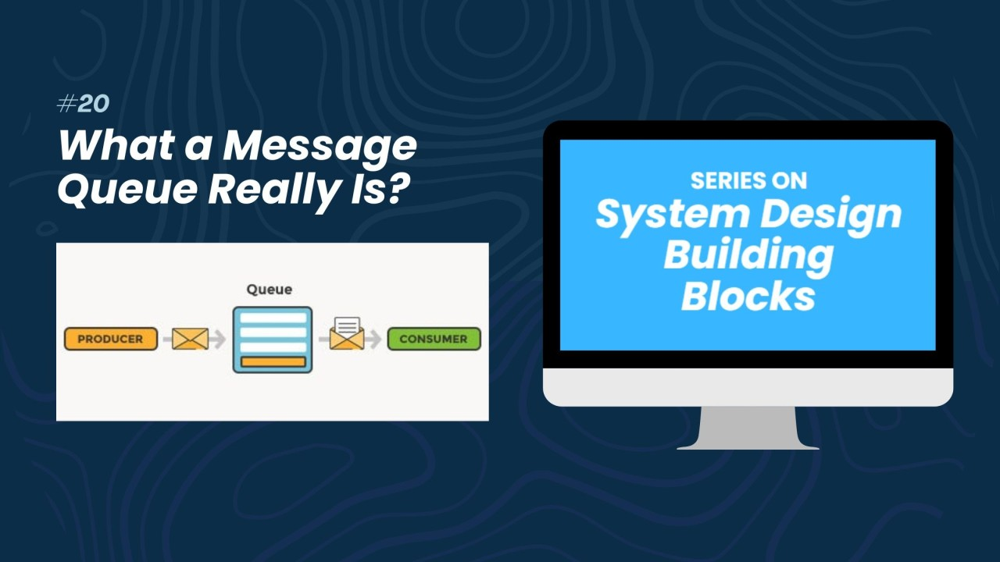
Browse the archive
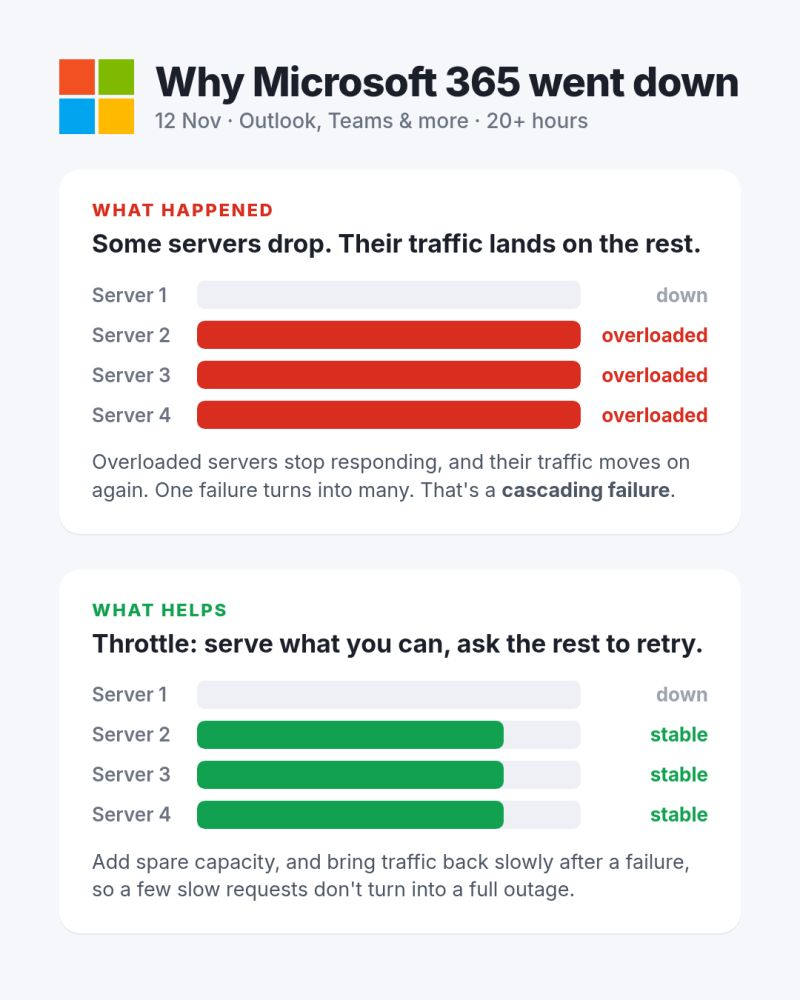
On 12 November, millions of people opened Outlook and nothing loaded.
Teams messages wouldn't send. Microsoft 365 apps kept spinning. Even some outside tools that connect to Microsoft stopped working. For some users…
Do you know what GPT means in ChatGPT?
Generative Pre-trained Transformer, and it's easiest to understand backwards.
One grey tick. Two grey ticks. Two blue ticks.
Three tiny icons on a chat app, and each one is a separate message travelling back to your phone.
MCP sounds complicated until you see the actual message an agent sends.
MCP sounds complicated until you see the actual message an agent sends. It's about one line of JSON.

How does Blinkit get milk to your door in 10 minutes? 🛵
It's not faster riders. It's system design.

Had a great time speaking at the devSemble meetup on “Inside an AI Agent: Build It. Connect It. Secure It.”
We explored AI agents through a simple question: what does it take to build an agent that can actually do things, instead of just answering questions?
How does Twitter keep its Search system up and stable at massive scale?
Search sounds straightforward
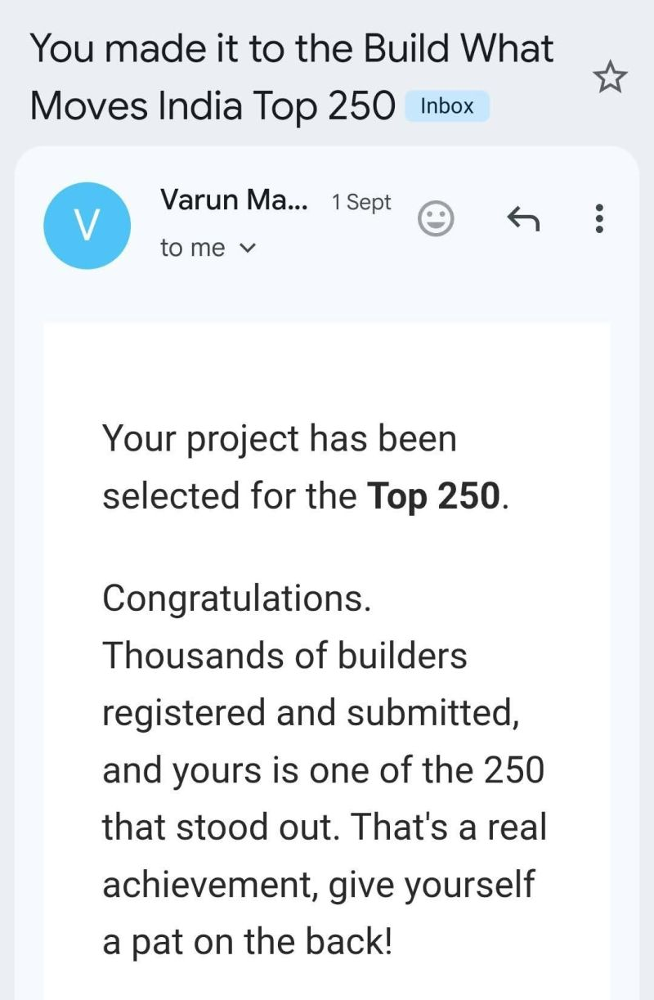
Reached the Top 250 out of 13,000 registrations in the Build What Moves India hackathon by Varun Mayya and OpenAI 🇮🇳

☁️ We talk about AI as if it exists somewhere in the cloud
But the cloud is not really a cloud.
What actually happens in the few milliseconds after you hit “Google Search”?
You type:

The Genius Behind Instagram’s “Infinite Scroll” 👀
You keep scrolling.
iPhone 17 at ₹50K during Big Billion Days 👀
Haha, hold on. Forget the ₹50K for a second 😂

How does Zomato show your delivery partner moving live on the map without refreshing the app? 👀
Here’s the simplified system design behind it.

Bloom Filters: How Databases Avoid Millions of Unnecessary Disk Reads
How bloom filters help a database avoid checking data that is definitely not there.
Sometimes, the fastest database query is the one you never execute.
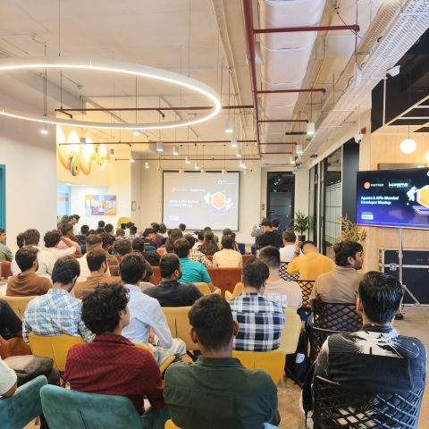
Spent my Saturday with a room full of people building some really cool stuff 😊
Had a great time attending the Agents & APIs Developer Meetup by Postman at DevX.

Stop Vibe Coding. Start Writing Specifications.
Why a clear specification matters when you write code with AI.
It took me almost a week to write this article
HTTP just got its first new standardized request method in more than 20 years.
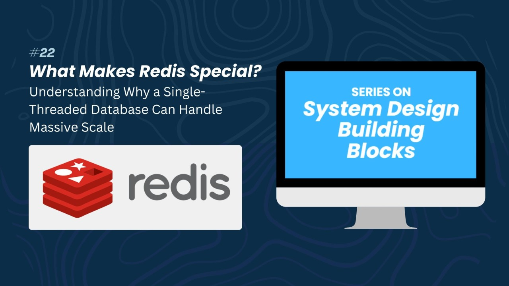
What Makes Redis Special? Understanding Why a Single-Threaded Database Can Handle Massive Scale
A closer look at how Redis handles work at scale.
Why and how is Redis single-threaded, yet still fast enough to handle thousands of concurrent connections?
How much storage do you think YouTube needs every day if users upload 500 hours of video every minute?
Take a guess before you Google it
Everyone talks about AI hallucinations and bias
But there’s a quieter problem that might be more dangerous.
Do you know the difference between AI Agents and Agentic AI?
A lot of people use these terms interchangeably. But they’re fundamentally different.
What happens when you upload a file to Amazon S3?
Let’s understand it step by step 👇
Dead Letter Queues are one of those small concepts that quietly save production systems.
When a message fails to be processed Maybe the data is malformed Maybe a downstream service is down
I was having a conversation with a fellow techie recently, and we landed on a simple idea that often gets overlooked.
Polling is one of the most underestimated solutions.
Your service is slow… but CPU usage is low. What do you check first?
It feels counterintuitive.
How do you deploy 20+ microservices with zero downtime?
When systems scale, deployments can’t afford disruption. A single failed release can impact thousands of users in seconds.
An API responds in ~100ms for users in the US, but takes ~2 seconds for users in India.
At first glance, it looks like a backend bug. In reality, it’s a standard system design problem.
𝗗𝗼𝗲𝘀 𝗣𝘆𝘁𝗵𝗼𝗻’𝘀 𝗚𝗮𝗿𝗯𝗮𝗴𝗲 𝗖𝗼𝗹𝗹𝗲𝗰𝘁𝗶𝗼𝗻 𝗿𝗲𝗮𝗹𝗹𝘆 𝗵𝗮𝗻𝗱𝗹𝗲 𝗮𝗹𝗹 𝗺𝗲𝗺𝗼𝗿𝘆 𝗽𝗿𝗼𝗯𝗹𝗲𝗺𝘀?
For a long time, I had this assumption: Python handles memory automatically, so I don’t really need to think about it.
🚩 Red Flag: Blocking users by IP
A common reaction to API abuse is to block the attacker’s IP address. However, this can unintentionally block many legitimate users.
𝗠𝘆 𝗘𝘅𝗽𝗲𝗿𝗶𝗲𝗻𝗰𝗲 𝘄𝗶𝘁𝗵 𝗗𝗮𝘁𝗮𝗯𝗿𝗶𝗰𝗸𝘀 (𝗔𝗻𝗱 𝗪𝗵𝘆 𝗜𝘁’𝘀 𝗠𝗼𝗿𝗲 𝗧𝗵𝗮𝗻 𝗝𝘂𝘀𝘁 “𝗕𝗶𝗴 𝗗𝗮𝘁𝗮”)
Recently, I worked on Databricks as part of a data workflow implementation and spent time exploring its architecture in depth. My initial…
𝗦𝘆𝘀𝘁𝗲𝗺 𝗗𝗲𝘀𝗶𝗴𝗻 𝗡𝗼𝘁𝗲:
𝗦𝘆𝘀𝘁𝗲𝗺 𝗗𝗲𝘀𝗶𝗴𝗻 𝗡𝗼𝘁𝗲: “𝗠𝗲𝘀𝘀𝗮𝗴𝗲 𝗤𝘂𝗲𝘂𝗲” 𝗮𝗻𝗱 “𝗘𝘃𝗲𝗻𝘁 𝗦𝘁𝗿𝗲𝗮𝗺” 𝗮𝗿𝗲 𝗻𝗼𝘁 𝘀𝘆𝗻𝗼𝗻𝘆𝗺𝘀.

SAGA Design Pattern in Microservice Architecture
An introduction to the Saga pattern for coordinating changes across services.
In a monolith, transactions are easy.
Recently discovered git worktree at work, and it genuinely made my day easier.
I was working on two branches in parallel, which normally comes with a lot of switching and context loss. Using worktree, I was able to keep both…
What a Message Queue Really Is
A plain-language look at message queues and where they fit in a distributed system.
𝗪𝗵𝗮𝘁 𝗮 𝗠𝗲𝘀𝘀𝗮𝗴𝗲 𝗤𝘂𝗲𝘂𝗲 𝗥𝗲𝗮𝗹𝗹𝘆 𝗜𝘀?
OpenAI recently released an article on 𝗦𝗰𝗮𝗹𝗶𝗻𝗴 𝗣𝗼𝘀𝘁𝗴𝗿𝗲𝗦𝗤𝗟 𝘁𝗼 𝗽𝗼𝘄𝗲𝗿 𝟴𝟬𝟬 𝗺𝗶𝗹𝗹𝗶𝗼𝗻 𝗖𝗵𝗮𝘁𝗚𝗣𝗧 𝘂𝘀𝗲𝗿𝘀.

Understanding Apache Kafka and Its Role in Modern System Design
An introduction to Apache Kafka and its place in modern system design.
Resuming the System Design Building Blocks series!
Recently I’ve been working with Elasticsearch, and it’s been a great learning experience.
What stood out to me is how thoughtfully its architecture is designed for scale and performance.
While working on distributed systems, I finally started appreciating the real meaning of the CAP Theorem.
In theory, we learn that a system can only guarantee two out of: • Consistency • Availability • Partition Tolerance
𝗪𝗵𝗮𝘁 𝗔𝗿𝗲 𝗪𝗲𝗯𝗵𝗼𝗼𝗸𝘀 𝗮𝗻𝗱 𝗛𝗼𝘄 𝗗𝗼 𝗧𝗵𝗲𝘆 𝗪𝗼𝗿𝗸?
In today’s highly connected digital world, no system truly works alone. E-commerce platforms talk to payment gateways, payment gateways talk to…
𝗪𝗵𝗮𝘁 𝗵𝗮𝗽𝗽𝗲𝗻𝘀 𝗶𝗳 𝘁𝘄𝗼 𝗺𝗶𝗰𝗿𝗼𝘀𝗲𝗿𝘃𝗶𝗰𝗲𝘀 𝘁𝗿𝘆 𝘁𝗼 𝗺𝗼𝗱𝗶𝗳𝘆 𝘁𝗵𝗲 𝘀𝗮𝗺𝗲 𝗱𝗮𝘁𝗮𝗯𝗮𝘀𝗲 𝗿𝗲𝗰𝗼𝗿𝗱 𝗮𝘁 𝘁𝗵𝗲 𝘀𝗮𝗺𝗲 𝘁𝗶𝗺𝗲?
A friend recently asked me this question, and after exploring it, here are the key findings. In this post, I will try to cover it in brief so that…
𝗪𝗵𝗮𝘁 𝗜 𝗻𝗼𝘄 𝗰𝗵𝗲𝗰𝗸 𝗳𝗶𝗿𝘀𝘁 𝘄𝗵𝗲𝗻 𝘀𝗼𝗺𝗲𝗼𝗻𝗲 𝘀𝗮𝘆𝘀 “𝘁𝗵𝗲 𝗔𝗣𝗜 𝗶𝘀 𝘀𝗹𝗼𝘄”
When I started working on backend systems, I used to jump straight into the code. Over time, I learned that slowness is rarely a code problem. It’s…
𝗔𝘀𝘆𝗻𝗰 𝗱𝗼𝗲𝘀 𝗻𝗼𝘁 𝗺𝗲𝗮𝗻 𝗳𝗮𝘀𝘁𝗲𝗿!
It means non-blocking, not lower latency.
I recently built a microservice from scratch, and while working through the implementation, I focused on identifying the essential best practices that actually make development and maintenance easier in the long run.
These are not theoretical ideals. They’re practical, must-do choices that directly boost productivity later when the system grows or requirements…
𝗚𝗣𝗨𝘀 𝗰𝗵𝗮𝗻𝗴𝗲𝗱 𝗔𝗜 𝗺𝗼𝗿𝗲 𝘁𝗵𝗮𝗻 𝗮𝗻𝘆 𝗮𝗹𝗴𝗼𝗿𝗶𝘁𝗵𝗺 𝗲𝘃𝗲𝗿 𝗱𝗶𝗱!
Neural networks existed in the 1980s. Backpropagation existed. Even large datasets existed.

𝗪𝗵𝘆 𝗟𝗮𝗿𝗴𝗲 𝗟𝗮𝗻𝗴𝘂𝗮𝗴𝗲 𝗠𝗼𝗱𝗲𝗹𝘀 𝗦𝘁𝗿𝘂𝗴𝗴𝗹𝗲 𝗪𝗶𝘁𝗵 𝗠𝗮𝘁𝗵?
I have heard this question many times and even noticed it myself.
𝗦𝗵𝗼𝘂𝗹𝗱 𝘆𝗼𝘂 𝗴𝗼 𝗯𝗲𝘆𝗼𝗻𝗱 𝗿𝗲𝗹𝗮𝘁𝗶𝗼𝗻𝗮𝗹 𝗱𝗮𝘁𝗮𝗯𝗮𝘀𝗲𝘀?
I have been thinking a lot about this tradeoff lately. Relational systems like MySQL and PostgreSQL have powered our applications for decades. They…
I recently came across an interesting concept in distributed systems called 𝗧𝗵𝗲 𝗖𝗲𝗹𝗲𝗯𝗿𝗶𝘁𝘆 𝗣𝗿𝗼𝗯𝗹𝗲𝗺, and I thought it would be helpful to break it down.
Imagine you build a social media platform. For most users, a simple NoSQL setup partitioned by user ID works perfectly. Traffic is balanced and…
𝗪𝗵𝘆 𝗶𝘀 𝗥𝗲𝗱𝗶𝘀 𝘀𝗼 𝗳𝗮𝘀𝘁?
Redis is known for its exceptional speed and low-latency performance, capable of handling over 100,000 queries per second. Its design is optimized…
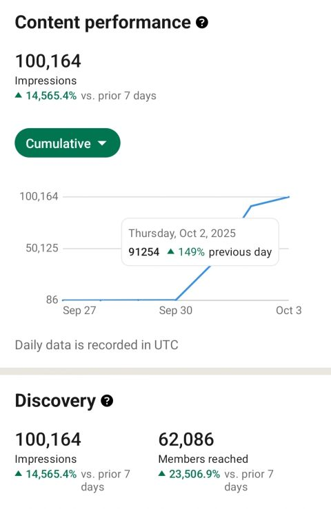
1,00,000+ impressions in a single day 🚀
#Grateful

Have you ever wondered how apps like Instagram, X, or Google instantly tell you “𝘂𝘀𝗲𝗿𝗻𝗮𝗺𝗲 𝗮𝗹𝗿𝗲𝗮𝗱𝘆 𝘁𝗮𝗸𝗲𝗻” when you sign up?
At first glance, it seems like a simple database query. But at the scale of billions of users across the globe, it’s far from simple. Running a…
Scaling backend systems often comes down to how background tasks are handled. Initially, our setup used Flask’s 𝗧𝗵𝗿𝗲𝗮𝗱𝗣𝗼𝗼𝗹𝗘𝘅𝗲𝗰𝘂𝘁𝗼𝗿, which tied tasks to the web container, lacked retries, and created scalability issues.
To overcome these challenges, I implemented 𝗖𝗲𝗹𝗲𝗿𝘆 𝘄𝗶𝘁𝗵 𝗥𝗲𝗱𝗶𝘀. This allowed tasks to run independently of Flask, added automatic retries, improved…
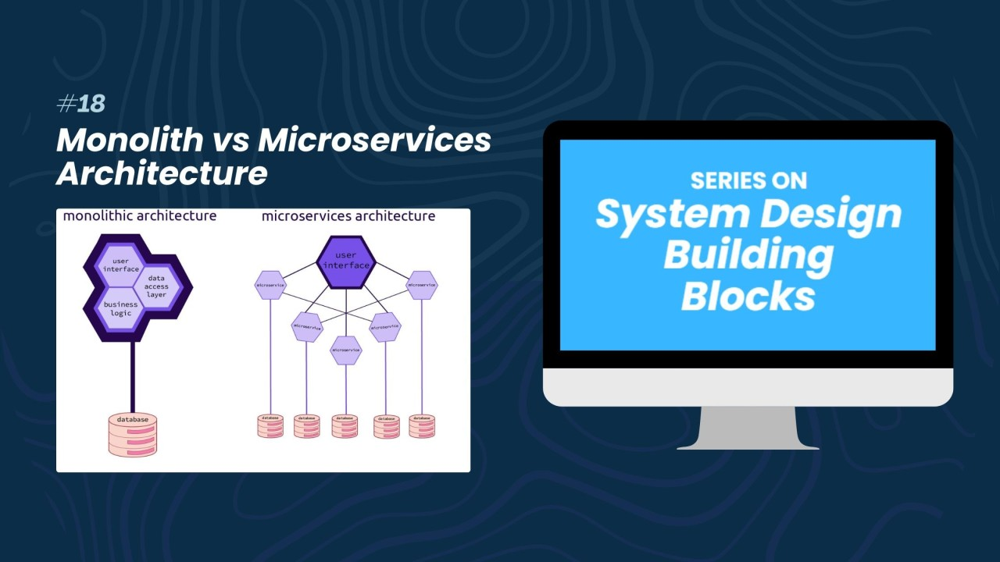
Monolith vs Microservices Architecture
A comparison of monolithic and microservices architectures.
Hi everyone!
OpenAI has released GPT-5, and it changes the way ChatGPT works!
The new model can automatically switch between quick responses and deep reasoning depending on the question, removing the need to choose models…
𝗪𝗵𝗮𝘁 𝗿𝗲𝗮𝗹𝗹𝘆 𝗵𝗮𝗽𝗽𝗲𝗻𝘀 𝘄𝗵𝗲𝗻 𝘆𝗼𝘂 𝗵𝗶𝘁 𝗮𝗻 𝗔𝗣𝗜 𝗲𝗻𝗱𝗽𝗼𝗶𝗻𝘁?
You open Postman or your frontend makes a call to /api/v1/user/42. A few hundred milliseconds later, you get a structured JSON response.
You enter your username and password. Hit “Login”, and instantly, you’re inside your dashboard.
That seamless experience is backed by a well-structured authentication system using middlewares, JWTs, access control, and secure session handling…
If we had to implement the 𝗹𝘀 𝗰𝗼𝗺𝗺𝗮𝗻𝗱 from scratch, how would we even start?
This seems like a very basic thing, but it gives a lot of clarity. Let’s find out by checking it step by step.
"𝗔𝗰𝗰𝗲𝘀𝘀 𝘁𝗼 𝗳𝗲𝘁𝗰𝗵 𝗮𝘁 '𝗮𝗽𝗶.𝗲𝘅𝗮𝗺𝗽𝗹𝗲.𝗰𝗼𝗺' 𝗳𝗿𝗼𝗺 𝗼𝗿𝗶𝗴𝗶𝗻 '𝗳𝗿𝗼𝗻𝘁𝗲𝗻𝗱.𝗲𝘅𝗮𝗺𝗽𝗹𝗲.𝗰𝗼𝗺' 𝗵𝗮𝘀 𝗯𝗲𝗲𝗻 𝗯𝗹𝗼𝗰𝗸𝗲𝗱 𝗯𝘆 𝗖𝗢𝗥𝗦 𝗽𝗼𝗹𝗶𝗰𝘆."
This is a common error. Right after deploying frontend and backend separately, everything seems fine… until the browser throws this dreaded message.
Coupon code valid for first 100 users only.
𝗪𝗲 𝗮𝗹𝗹 𝗵𝗮𝘃𝗲 𝘀𝗲𝗲𝗻 𝘁𝗵𝗶𝘀 𝗺𝗲𝘀𝘀𝗮𝗴𝗲, 𝗿𝗶𝗴𝗵𝘁? And just as you are about to complete your payment, you realize you might be the 𝟵𝟴𝘁𝗵, 𝟵𝟵𝘁𝗵, 𝗼𝗿 𝟭𝟬𝟬𝘁𝗵 𝘂𝘀𝗲𝗿.

Load Balancing Algorithms with Real-World Examples
Load-balancing algorithms explained through real-world examples.
Hi everyone!
𝗪𝗵𝘆 𝗘𝗿𝗿𝗼𝗿 𝗛𝗮𝗻𝗱𝗹𝗶𝗻𝗴 𝗠𝗮𝘁𝘁𝗲𝗿𝘀 ?
Error handling is not optional. It can never be ignored because unexpected situations always occur in real-world applications, and no one wants…
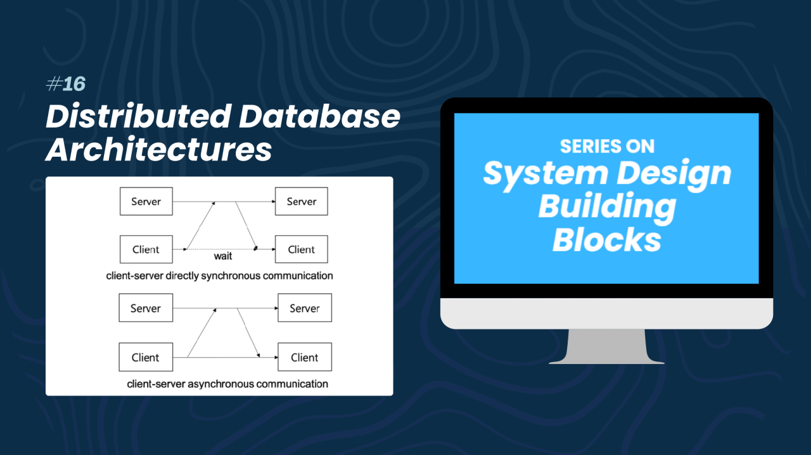
Synchronous vs Asynchronous Communication
Two ways services exchange requests and respond to one another.
Just tried OpenAI’s ChatGPT Agent Mode and honestly… I’m amazed!
You can now ask it to actually do things, not just answer questions or generate content.
Hi everyone!
𝗛𝗼𝘄 𝗔𝗿𝗲 𝗖𝗼𝗺𝗽𝘂𝘁𝗲𝗿𝘀 𝗮𝗻𝗱 𝗣𝗿𝗼𝗴𝗿𝗮𝗺𝗺𝗶𝗻𝗴 𝗔𝗰𝘁𝘂𝗮𝗹𝗹𝘆 𝗥𝗲𝗹𝗮𝘁𝗲𝗱?
Think of a computer as a machine, like a car engine. On its own, it just sits there. To make it do something, you need to give it instructions.

Distributed Database Architectures | Active-Active Architecture Application
A look at active-active architecture for distributed databases.
Hi everyone!
You open LinkedIn or Instagram for a quick break, just 2 minutes.
You open LinkedIn or Instagram for a quick break, just 2 minutes. Suddenly it's 30 minutes later and you're still scrolling. Sounds familiar, right?
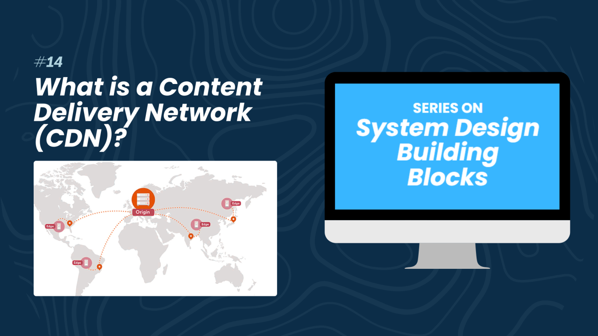
What is a Content Delivery Network (CDN)?
What a CDN does and why it puts content closer to users.
You open an app. The button says "Buy Now"
You open an app. The button says "Buy Now" Your friend opens the same app. The button says "Get Started"
Hi everyone!
Business logics and brainstorming the edge cases,
Business logics and brainstorming the edge cases, asking what really matters, iterating again and again not just to make it work, but to make it…

HTTP Status Codes: The Language Between Clients and Servers
How clients and servers communicate outcomes through HTTP status codes.
𝗪𝗵𝗮𝘁’𝘀 𝘁𝗵𝗲 𝗵𝘆𝗽𝗲 𝗮𝗯𝗼𝘂𝘁 𝗖𝗹𝗲𝗮𝗻 𝗖𝗼𝗱𝗲 𝘄𝗵𝗲𝗻 𝗲𝘃𝗲𝗿𝘆𝘁𝗵𝗶𝗻𝗴 𝘄𝗼𝗿𝗸𝘀 𝗲𝘃𝗲𝗻 𝘄𝗶𝘁𝗵𝗼𝘂𝘁 𝗶𝘁?
That’s a fair question. If the code runs and gives correct output, why bother making it “clean”?
Hi everyone!
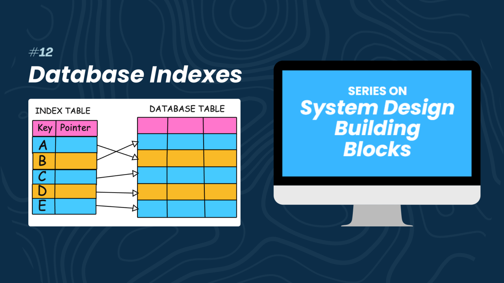
Database Indexes
Hi everyone!
Now I’ve started to understand the beauty of a curious mind.
I feel like I’m in that phase where I want to explore everything. Startups fascinate me. I dream of building my own business empire. Development is…
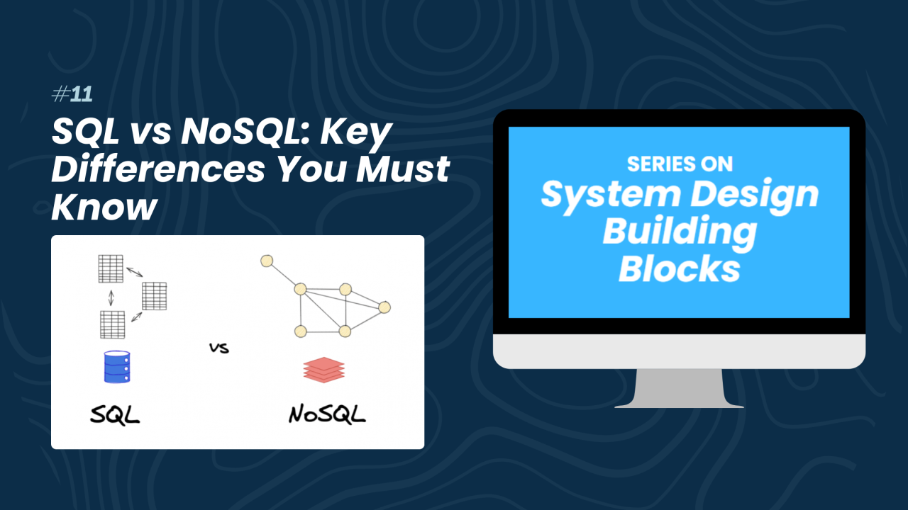
SQL vs NoSQL: Key Differences You Must Know
𝗦𝗤𝗟 𝘃𝘀 𝗡𝗼𝗦𝗤𝗟: 𝗪𝗵𝗶𝗰𝗵 𝗢𝗻𝗲 𝗦𝗵𝗼𝘂𝗹𝗱 𝗬𝗼𝘂 𝗖𝗵𝗼𝗼𝘀𝗲?

Types of Databases and When to Use Them
𝗨𝗻𝗱𝗲𝗿𝘀𝘁𝗮𝗻𝗱𝗶𝗻𝗴 𝗗𝗮𝘁𝗮𝗯𝗮𝘀𝗲𝘀: 𝗖𝗵𝗼𝗼𝘀𝗶𝗻𝗴 𝘁𝗵𝗲 𝗥𝗶𝗴𝗵𝘁 𝗢𝗻𝗲 𝗳𝗼𝗿 𝗬𝗼𝘂𝗿 𝗦𝘆𝘀𝘁𝗲𝗺
Hi everyone!

API Architecture: What is an API Gateway and Why It Matters
Hi everyone!
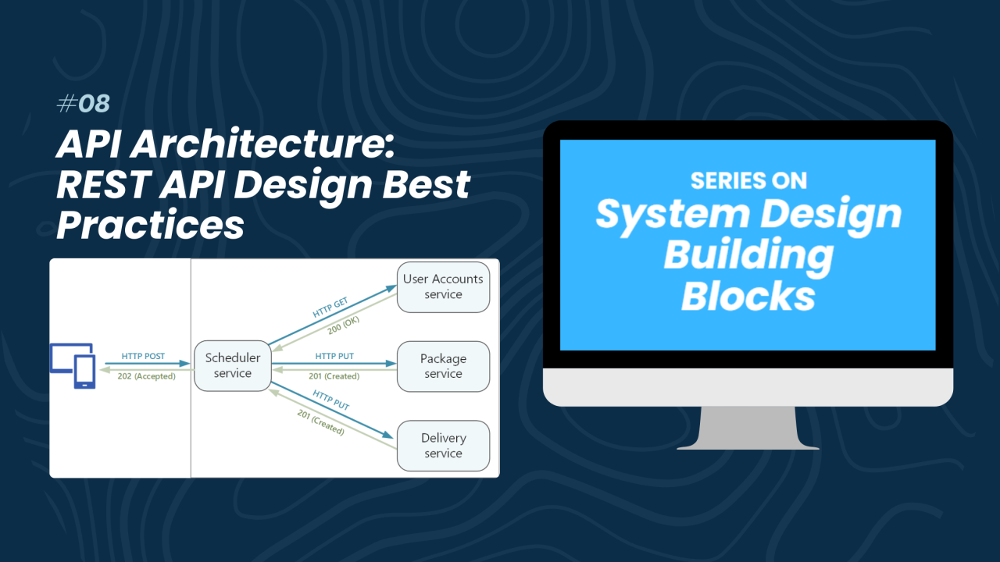
API Architecture: REST API Design Best Practices
Hi everyone!

What is an API? A Fundamental Bridge in Modern Software
Hi everyone!

Process and States of Process in an Operating System
Hi everyone!
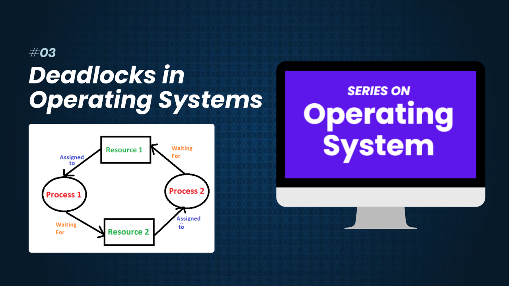
Deadlocks in Operating Systems
Hi everyone!
Hi everyone!

Paging in Operating Systems
India has taken a major step forward in quantum communication.
DRDO and IIT Delhi have successfully demonstrated secure quantum communication over free space without using any fiber optic cables.
Hi everyone!

CPU Scheduling in Operating Systems
Hi everyone!
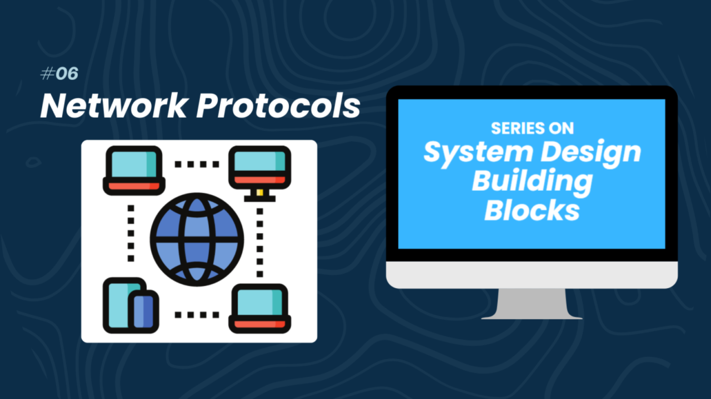
Network Protocols
Hi everyone!
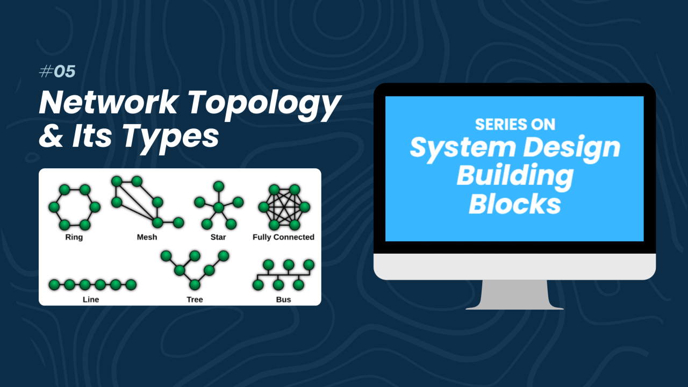
Network Topology & Its Types
Hi everyone!

Peer-to-Peer (P2P) Architecture: A Deep Dive with Real-World Use Cases
Hi everyone!
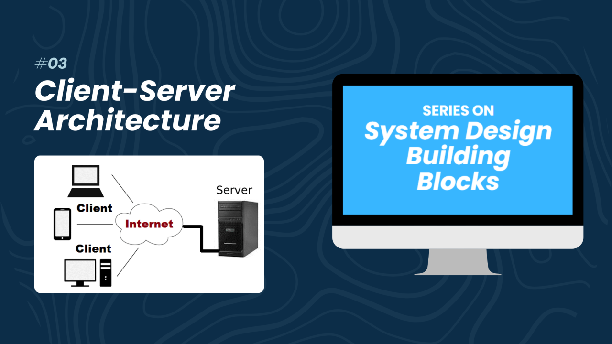
Client-Server Architecture: Explained with Depth and Real-World Examples
Hi everyone!

ACID Transactions in Databases: Explained with Examples
Hi everyone!

CAP Theorem Explained
Hi everyone,
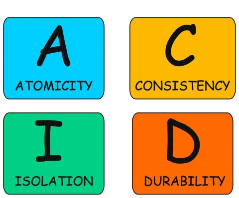
𝗪𝗵𝗮𝘁 𝗮𝗿𝗲 𝗔𝗖𝗜𝗗 𝗧𝗿𝗮𝗻𝘀𝗮𝗰𝘁𝗶𝗼𝗻𝘀 𝗶𝗻 𝗗𝗮𝘁𝗮𝗯𝗮𝘀𝗲𝘀?
Ever wondered how your bank transfers or online orders never go half-done even if something crashes in the middle?

𝗛𝗼𝘄 𝗣𝗼𝘀𝘁𝗴𝗿𝗲𝗦𝗤𝗟 𝗪𝗼𝗿𝗸𝘀: 𝗜𝗻𝘁𝗲𝗿𝗻𝗮𝗹 𝗔𝗿𝗰𝗵𝗶𝘁𝗲𝗰𝘁𝘂𝗿𝗲
If you are using PostgreSQL in your application, understanding what happens behind the scenes will help in making smarter, faster, and more…

𝗛𝗼𝘄 𝗱𝗼 𝗺𝗼𝗱𝗲𝗿𝗻 𝗮𝗽𝗽𝘀 𝗱𝗼 𝘀𝗼 𝗺𝗮𝗻𝘆 𝘁𝗵𝗶𝗻𝗴𝘀 𝗮𝘁 𝗼𝗻𝗰𝗲 𝘄𝗶𝘁𝗵𝗼𝘂𝘁 𝗳𝗿𝗲𝗲𝘇𝗶𝗻𝗴?
Hi everyone, I’m Ashmita 👋 Today I want to share a key concept that often gets confusing but let’s discuss it in a simpler way. We are talking…
Starting with DP and Graphs now!!
Life was peaceful so far until Trees, Birds were chirping, recursion made sense (kind of)... and now it’s time to move ahead into the real chaos

Stop chasing every new framework.
It’s a trap many beginners fall into — thinking the more tools you know, the better developer you become.

Hi everyone!
Starting my LinkedIn journey... but how?
After spending a considerable amount of time here on LinkedIn, absorbing the valuable knowledge shared by amazing professionals, I'm thrilled to…
No matches
Try a different search or clear the topic filter.